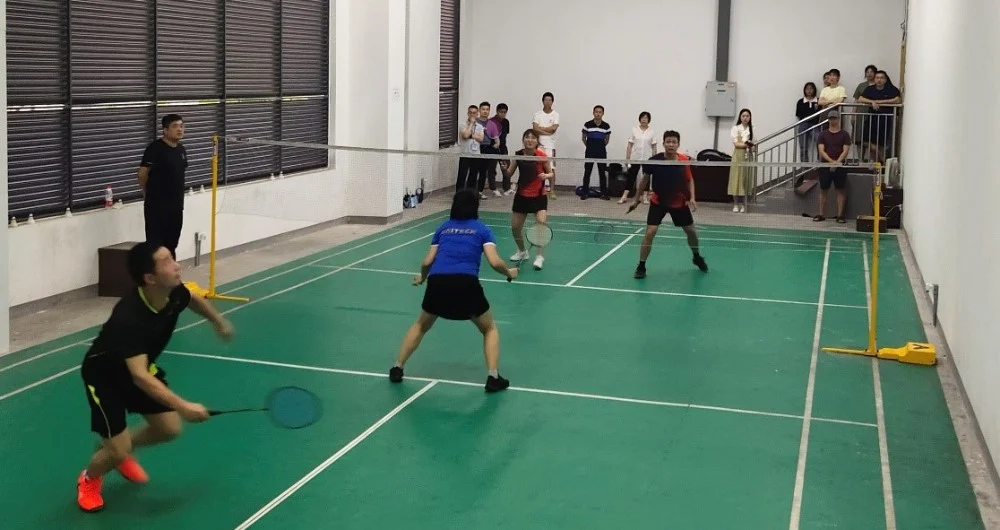
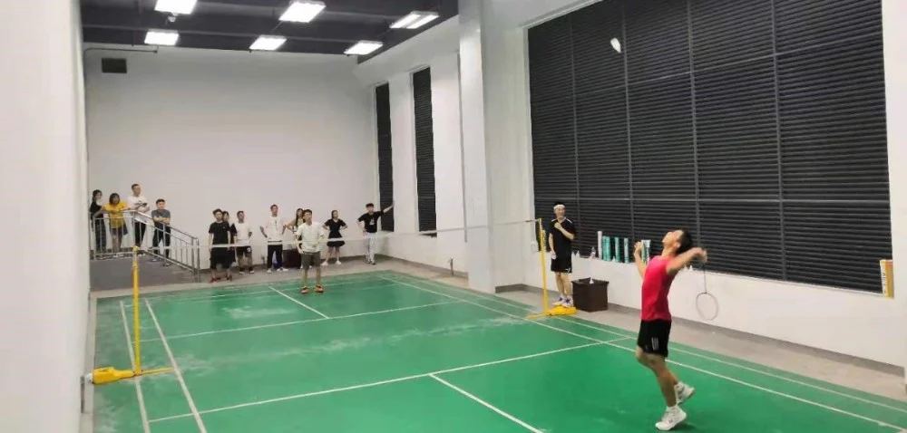
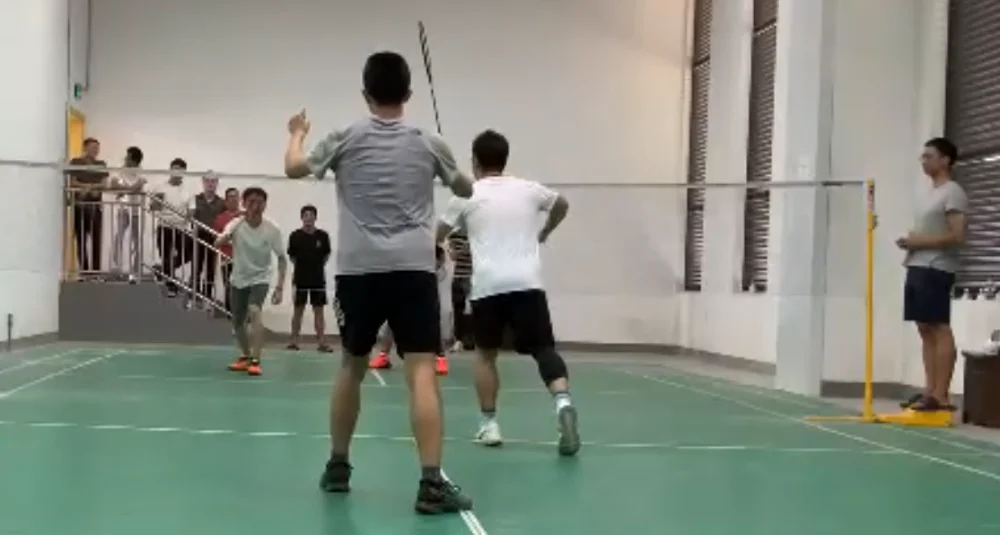

千秋伟业，百年大党，风华正茂。在庆祝中国共产党成立100周年之际，慈溪生物医学工程研究所举办了首届羽毛球争霸赛，iMED自然要全力以赴。本届羽毛球争霸赛采取自由组队方式，由医工所下属各个研究团队师生共同参与。本次比赛包括“混双”、“男双”、“男单”、“女单”、“女双”五种赛制，分为淘汰赛、半决赛、决赛三个部分，采用“21分制，三局两胜”规则。
首赛开局
7月1日中午，天气格外炎热。本次比赛首先由张波涛&李娟组成的黄金搭档队对阵由牟磊&吕文豪组成的萌新队。11：50分，前来观看比赛的观众陆续进场，而场内参赛选手也在紧张的氛围中进行热身。随着主裁判的开赛口令响起，首场混双比赛正式开始。场上矫健的步伐，清脆的击球音，场下安静的氛围，更为比赛带了来紧张与刺激。本场比赛萌新队率先连续拿下了两分，但随着黄金搭档调整节奏，一个前场封网，一个后场扣杀，很快将比赛拉平。黄金搭档队乘胜追击，继续大好攻势，顺利拉开差距。在观众的热情掌声中，第一回合正式结束，黄金搭档队获得了胜利。黄金搭档队凭借着老道的赛场经验，顺利拿下了第二回合。至此，首场比赛伴随着黄金搭档的胜利圆满结束。

男单决战
时间飞逝，一转眼各分组比赛已进入白热化阶段。7月11日晚的男单决赛尤为激烈，由智能医学影像团队的马韶东老师对阵先进涂层与增材制造团队的任虔弘同学。两位选手不骄不躁，稳扎稳打，展现出了见招拆招、点杀、扣杀、网前放小球、劈吊、后杀斜线、追身球等高水准击球技术，比赛最后以马韶东老师已2:1赢下男单冠军而告终。

最后一战
7月16号中午，期待已久的男双决赛暨闭幕赛正式开始。由iMED的赵一天和谢建洋对阵任虔弘和张波涛。比赛一开始，双方选手就开始了激烈的拼杀。高远球、扣杀、劈杀、吊球等各路球技被他们演绎的淋漓尽致，比分不断被改写。任虔弘和张波涛老师的扣杀和默契的配合，渐渐拉开分差，但谢建洋和赵一天老师不气馁、不放弃、奋力拼搏。比赛进入了白热化的后半段，多以直线球和网前劫杀与对手进行对决，可终不敌对手，最终任虔弘和张波涛老师拿下男双冠军。
